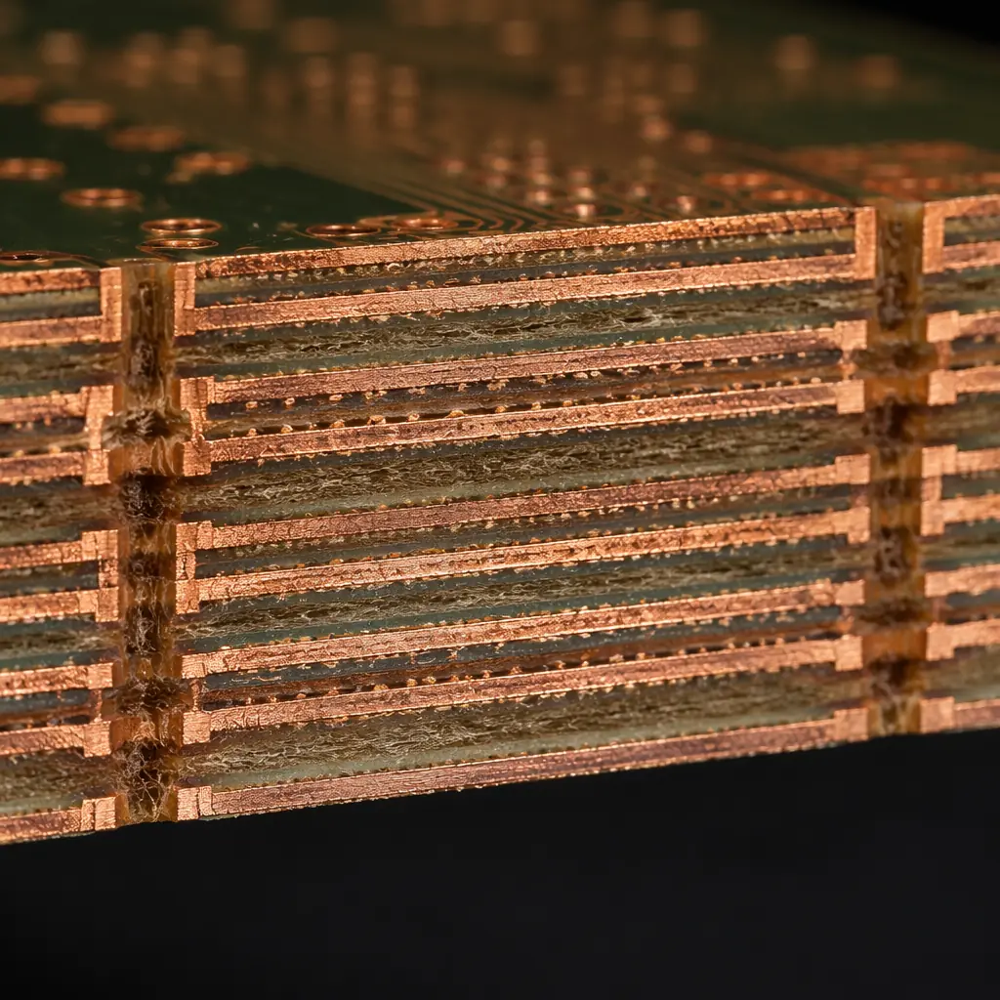

Every PCB starts as a data package. Gerber RS-274X has been the default format since 1998 — but it transmits geometry without intelligence. Your fabricator's CAM engineer must manually interpret what each layer represents, deduce the stackup intent, and hope nothing was lost in translation. When an IPC study found that 37% of PCB orders require at least one CAM clarification cycle, the root cause was clear: the data format itself creates ambiguity.
At Huaxing PCBA, we process over 2,500 PCB data packages monthly across formats including Gerber X2, ODB++, and IPC-2581. This guide compares all four major formats — Gerber RS-274X, Gerber X2, ODB++, and IPC-2581 — so you can choose the one that minimizes CAM questions, reduces lead time, and eliminates the most expensive error in PCB manufacturing: building a board that doesn't match the designer's intent.
The Four PCB Data Formats — What Each Actually Transmits
Before comparing formats, it's important to understand what each one encodes — and more importantly, what it doesn't. The gap between "what the format contains" and "what the fabricator needs to know" is where CAM questions and manufacturing errors originate.
| Capability | Gerber RS-274X | Gerber X2 | ODB++ | IPC-2581 Rev C |
|---|---|---|---|---|
| Copper geometry | ✅ | ✅ | ✅ | ✅ |
| Layer type identification | ❌ (file name only) | ✅ (attributes) | ✅ | ✅ |
| Stackup definition | ❌ | ❌ | ✅ | ✅ |
| Material specifications | ❌ | ❌ | ✅ | ✅ |
| Netlist with connectivity | ❌ | ❌ | ✅ | ✅ |
| Component placement | ❌ | ❌ | ✅ | ✅ |
| Drill data (embedded) | ❌ (separate file) | ❌ (separate file) | ✅ | ✅ |
| Impedance requirements | ❌ | ❌ | Limited | ✅ |
| Single-file output | ❌ (8-30 files) | ❌ (8-30 files) | ❌ (tar.gz) | ✅ (single XML) |
| Open standard (no license) | ✅ | ✅ | ❌ (Mentor/Siemens) | ✅ (IPC standard) |
Key Insight: Gerber RS-274X tells the fabricator what shapes to put on each layer. It does not tell them which layer is the top copper, what dielectric separates layers 3 and 4, or which traces must maintain 50Ω. All of that context lives in a separate fabrication drawing — a PDF that the CAM engineer must manually reconcile with the Gerber data. This manual reconciliation is where errors enter.
Gerber RS-274X — The Universal Baseline (and Its Limits)
RS-274X improved on the original Gerber format by embedding aperture definitions within the file, eliminating the separate aperture list that caused so many mismatches. It remains the most widely accepted format — every PCB fabricator on Earth can process it.
But RS-274X has a fundamental limitation: it describes geometry without semantics. An annular ring on layer 3 is just a copper polygon — the file doesn't indicate whether it's a pad, a via land, or a thermal tie. The layer type is inferred from the file name (e.g., "TOP.gbr" vs "LAYER_3.gbr"), which is convention, not specification. Our CAM team at Huaxing PCBA estimates that roughly 15% of RS-274X data packages have at least one ambiguous layer assignment that requires email clarification — typically when a designer uses non-standard naming or accidentally swaps inner layer files.
Gerber RS-274X is the safest fallback — but never send it alone
If you must submit RS-274X, always include a detailed fabrication drawing (PDF) specifying stackup, material, impedance targets, and drill chart. The drawing is not optional — it's the only document that tells your fabricator what the Gerber geometry means. For guidance on what goes into a proper fab drawing, see our Gerber files preparation guide.
Gerber X2 — Adding Intelligence Without Changing the Workflow
Gerber X2 (2014) extends RS-274X with standardized attributes that encode layer function, pad types, and file relationships directly into the Gerber data. The key advantage: your CAD tool can export X2 with the same workflow as RS-274X, but the output now communicates "this file is the top copper layer" and "these polygons are SMD pads" unambiguously.
X2 attributes eliminate the most common CAM question: "Which file is which layer?" They also enable automated netlist comparison — the X2 net attribute allows the CAM system to verify that every copper feature belongs to a net defined in the IPC-356 netlist. At Huaxing PCBA, data packages with X2 attributes skip 40% of the manual CAM review steps that RS-274X packages require, directly reducing engineering lead time.
X2 does not include stackup or material data, so you still need a separate fab drawing. But for designers who want to reduce CAM questions without changing tools, X2 is the lowest-friction upgrade. Most major CAD tools — Altium Designer, KiCad 7+, Cadence Allegro — support Gerber X2 export natively.
ODB++ — The Industry Workhorse for Complex Designs
ODB++ (Open Database++, originally developed by Valor, now owned by Siemens/Mentor Graphics) was the first format to package complete PCB manufacturing data — copper layers, stackup, netlist, component placement, and drill data — into a single structured directory. It has been the de facto standard for complex multi-layer boards since the early 2000s.

ODB++ eliminates nearly all of RS-274X's ambiguity. The stackup is explicit, materials are specified, and the netlist enables automated DFM checks — the CAM system can verify trace width, annular ring, and clearance rules directly against your design data without manual interpretation.
However, ODB++ has two friction points. First, it's not truly "open" — the specification is controlled by Siemens, and while ODB++ output is included in most CAD tools via a no-cost license, the format's evolution depends on a single company. Second, ODB++ output is a directory tree (hundreds of files inside a .tgz), not a single file — some procurement portals and PLM systems struggle with multi-file submissions. For a detailed walkthrough of what to check before submitting any data package, refer to our PCB supplier audit checklist.
IPC-2581 — The Open Standard That Eliminates CAM Ambiguity
IPC-2581 Revision C (2020) is the format the PCB industry has been working toward for two decades: a single, open-standard XML file that contains everything the fabricator and assembler need — copper geometry, stackup, materials, netlist, components, drill data, impedance requirements, and test point locations. One file. No separate fab drawing. No manual interpretation.
Single XML file replaces 8-30 Gerber files + fab drawing + drill file + netlist
IPC-2581 packages all design data into one .xml file — typically 5-20 MB for a complex multi-layer board. This eliminates the "missing file" problem entirely. Every Huaxing PCBA customer who switched to IPC-2581 has eliminated CAM clarification emails — the data either passes our automated DRC or it doesn't; there's nothing to "interpret."
Explicit stackup, materials, and impedance — no fab drawing needed
IPC-2581 encodes the dielectric material (e.g., "Shengyi S1000-2, 0.15 mm, 2×2116 prepreg"), copper weight per layer, and target impedance for each net class. Your fabricator's CAM system reads this directly — no more "we assumed FR-4 Tg 135" vs "we designed for IT-180A." For complex PCB stackup designs, this single feature eliminates the most expensive category of manufacturing errors.
IPC-2581 is a true open standard — no vendor lock-in
Unlike ODB++, IPC-2581 is maintained by the IPC consortium (the same organization behind IPC-A-610 and IPC-6012). Any CAD vendor or fabricator can implement it without license fees. The format has broad and growing support: Cadence Allegro, Zuken CR-8000, Mentor Xpedition, and Altium Designer (via the IPC-2581 Consortium plugin) all export IPC-2581 natively. KiCad is developing support as of 2026.
Procurement Impact: At Huaxing PCBA, IPC-2581 data packages enter CAM review already validated. The format's embedded netlist enables our system to compare every copper feature against the electrical design before a human CAM engineer sees the job. This automated pre-check catches open/short circuits, missing annular rings, and clearance violations within 5 minutes of upload — compared to 4-24 hours for manual CAM review of an RS-274X package. For time-sensitive projects, specifying IPC-2581 output from your designer can save 1-2 days of engineering lead time.
Format Selection Guide — When to Use Each
| Scenario | Recommended Format | Why |
|---|---|---|
| 2-4 layer simple board, quick-turn prototype | Gerber X2 + PDF fab drawing | Lowest friction, every fab accepts it, attributes reduce CAM questions |
| 6-12 layer controlled-impedance board | ODB++ or IPC-2581 | Stackup and impedance data included — prevents interpretation errors |
| HDI with blind/buried vias | ODB++ or IPC-2581 | Via definitions must be explicit; RS-274X cannot encode microvia structures |
| High-volume production (10k+ units) | IPC-2581 | Single-file traceability, automated DRC, zero CAM clarification — saves 1-2 days engineering time |
| Legacy design with old CAD tool | Gerber RS-274X + detailed fab drawing | Acceptable if documentation is thorough; expect 1-3 CAM questions |
| RF/microwave with impedance-critical nets | IPC-2581 | Per-net impedance targets encoded; eliminates "which traces are 50Ω?" ambiguity |
What This Means for PCB Buyers and Procurement Teams
If you're a procurement manager sourcing PCB fabrication, you may not control which CAD tool your engineering team uses — but you control what you ask for in the fabrication RFQ. Adding one sentence to your standard RFQ template eliminates the most common source of manufacturing delays:
RFQ Template Addition: "All PCB data shall be submitted in IPC-2581 Rev C or ODB++ format. Gerber RS-274X data packages must be accompanied by a detailed fabrication drawing specifying stackup, materials, controlled-impedance requirements, and drill chart per IPC-2615."
This single requirement moves your orders from the "needs CAM clarification" queue to the "ready for tooling" queue. Across the 2,500+ data packages we process monthly at Huaxing PCBA, IPC-2581 and ODB++ submissions consistently achieve first-pass CAM acceptance rates above 95%, compared to approximately 63% for RS-274X packages. The format you choose directly controls your lead time.
For guidance on preparing your complete data package — regardless of format — see our Gerber file preparation checklist. And if your team is transitioning to IPC-2581, contact our engineering team — we provide free format validation before you release the design for production.